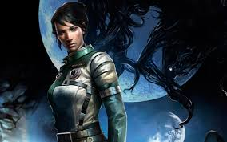
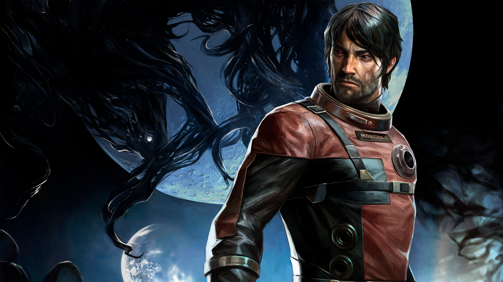
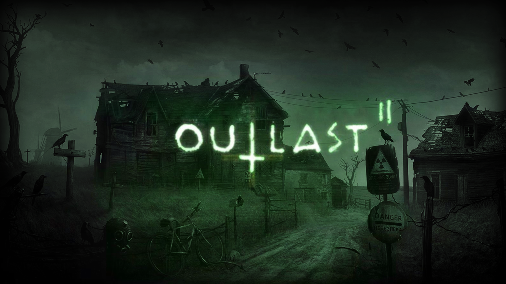
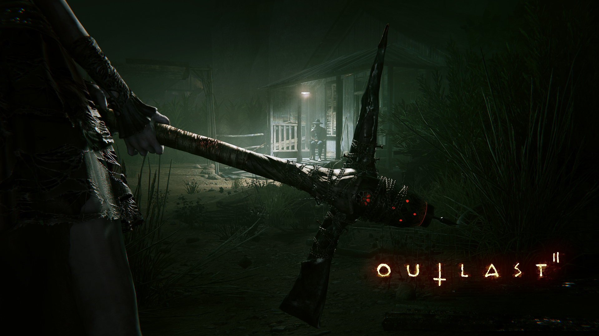
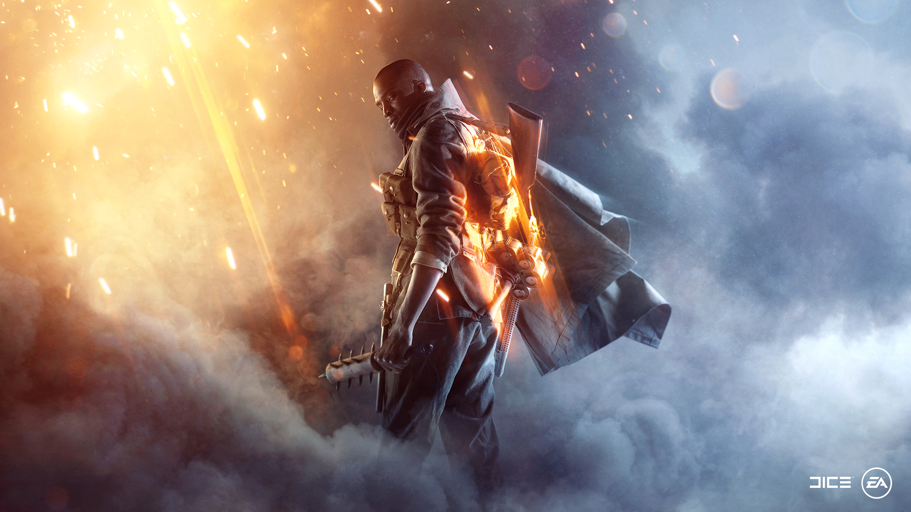
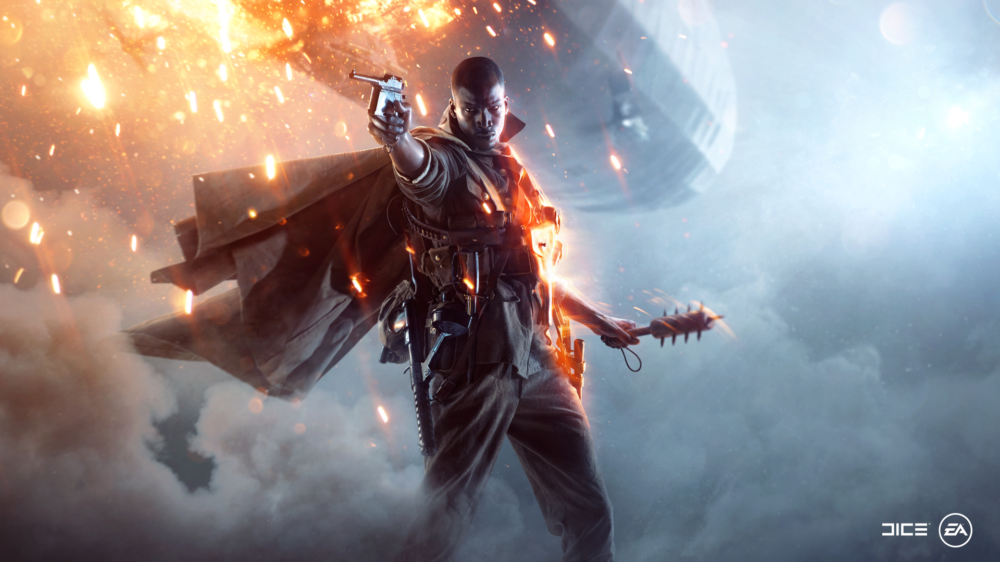
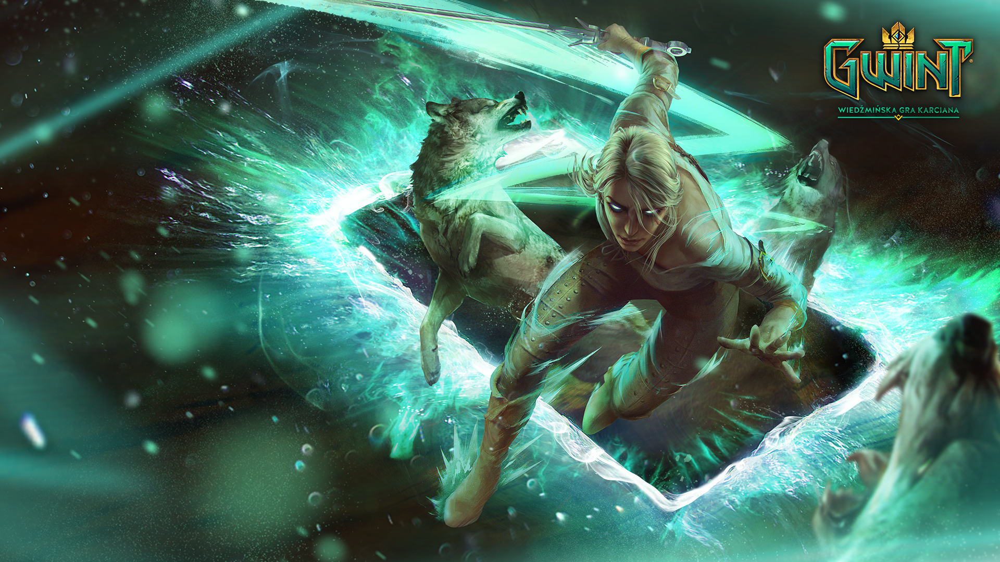
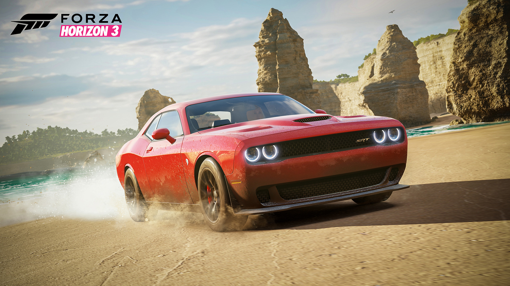
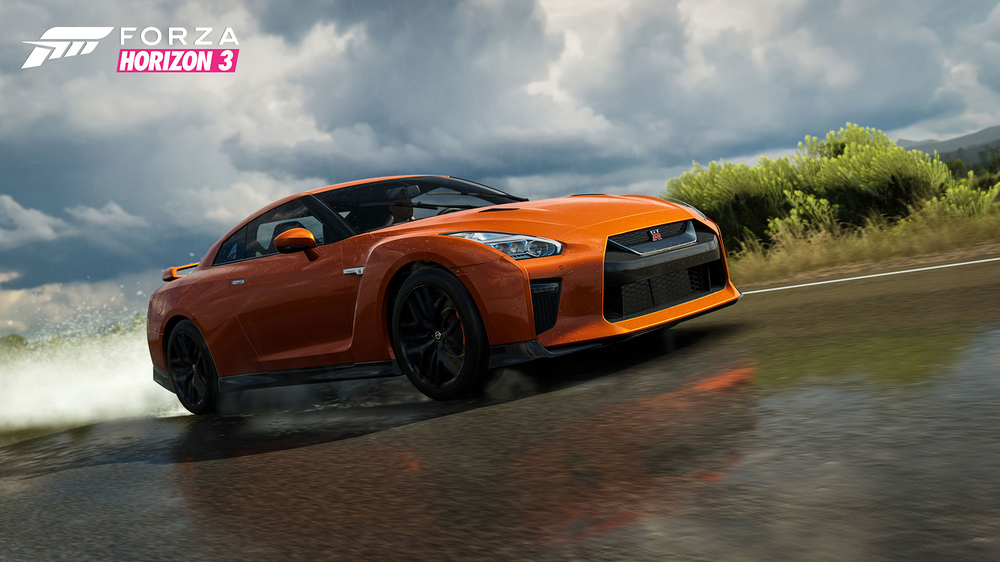

Następca osadzonej w realiach science fiction, bestsellerowej strzelaniny FPS z 2006 roku. Po perturbacjach, będących swoistą zmorą cyklu, stworzenie gry zlecono Arkane Studios, znanemu głównie za sprawą serii Dishonored. Nie jest to typowa kontynuacja, a raczej swoisty reboot pierwowzoru; obie gry łączy w zasadzie jedynie konwencja gatunkowa i konieczność samotnej walki z Obcymi na pokładzie zawieszonej w kosmicznej pustce stacji. Bohaterem gry jest Morgan Yu – w zależności od wyboru grającego, kobieta lub mężczyzna – będący(a) częścią projektu naukowego, mającego na celu ulepszenie rasy ludzkiej. W toku rozgrywki przychodzi nam stawić czoła rzeszom kosmitów o zróżnicowanych cechach i umiejętnościach - niektóre z nich możemy przejąć i kreatywnie wykorzystać - a także posłużyć się szeregiem futurystycznych broni i urządzeń.


Outlast to pierwszoosobowy survival horror. Jest to debiutancki projekt zespołu Red Barrels, założonego przez ludzi, którzy pracowali wcześniej nad takimi seriami jak Prince of Persia, Assassin’s Creed, Splinter Cell oraz Uncharted. Akcja toczy w Stanach Zjednoczonych. Fabuła opowiada o losach zakładu dla obłąkanych, zlokalizowanego w stanie Kolorado. Przez długie lata budynek ten stał opuszczony, ale niedawno wykupiła go korporacja Murkoff, która otworzyła w tym miejscu ośrodek badawczy. W Outlast wcielamy się w dziennikarza o imieniu Miles Upshur, który dostaje cynk, że w zakładzie dzieją się dziwne rzeczy. Chcąc odkryć prawdę, włamuje się on do ośrodka i szybko odkrywa, że na miejscu przeprowadzane są nie tylko zakazane eksperymenty medyczne, ale również bluźniercze rytuały. Bez żadnej broni, wyposażony wyłącznie w kamerę i kilka zapasowych baterii, Miles wkracza do budynku, który wita go krwawymi scenami niedawnej masakry. Ktoś – lub coś – zabija pensjonariuszy i personel ośrodka, a jedyni żyjący świadkowie tych przerażających zbrodni są zbyt mocno zaburzeni, by służyć jakąkolwiek pomocą.


Battlefield 1 to kolejna pełnoprawna odsłona jednej z najpopularniejszych serii pierwszoosobowych strzelanin, ukierunkowanych na zabawę w trybie multiplayer. Cykl zadebiutował w 2002 roku grą Battlefield 1942 i doczekał się czterech części oraz kilku spin-offów – w tym Battlefield Vietnam, Battlefield 2142, Battlefield: Bad Company i Battlefield Hardline. Za powstanie kolejnej pozycji z serii odpowiadają jej oryginalni twórcy ze studia DICE, które od 2006 roku jest częścią koncernu Electronic Arts. Nowa odsłona serii Battlefield została oficjalnie zapowiedziana w dniu 6 maja 2016 roku, a ukazała się 21 października na trzech najważniejszych platformach sprzętowych. Wersja na PC Windows tradycyjnie góruje nad swoimi konsolowymi odpowiednikami pod względem jakości grafiki oraz wyboru dostępnych opcji konfiguracyjnych.


Gwint: Wiedźmińska gra karciana (ang. Gwent: The Witcher Card Game) na platformę PC Windows to klasyczna karcianka fantasy, która pozwala na dowodzenie bohaterami i jednostkami wyciągniętymi wprost z wiedźmińskiego uniwersum, stworzonego przez Andrzeja Sapkowskiego. Gwint zadebiutował w wydanej w 2015 roku grze Wiedźmin 3: Dziki Gon. Szybko zyskał on ogromną popularność i został okrzyknięty przez fanów jedną z najlepszych minigier w historii branży. Niezliczone rzesze graczy ochoczo zbierały wirtualne karty oraz podróżowały po świecie wiedźmina w poszukiwaniu coraz groźniejszych oponentów. Za produkcję Gwinta: Wiedźmińskiej gry karcianej odpowiada polskie studio CD Projekt RED.


Kolejna odsłona popularnej serii gier wyścigowych od studia Playground Games. Tym razem deweloperzy oddali do naszej dyspozycji dużą lokację na terenie Australii, największy jak do tej pory park maszyn oraz możliwość przejścia kampanii w ramach czteroosobowego co-opa.
Podobnie jak w dwóch poprzednich częściach cyklu, tak i w grze Forza Horizon 3 bierzemy udział w motoryzacyjnym festiwalu. Tym razem jednak nie występujemy tylko w roli zawodnika, ale również organizatora, dzięki czemu możemy wpływać na rodzaj samochodów używanych podczas zawodów, wybierać pogodę, porę dnia itd. Celem zabawy jest zatroszczenie się o jak największą liczbę fanów, by była to najlepsza tego typu impreza na świecie.
